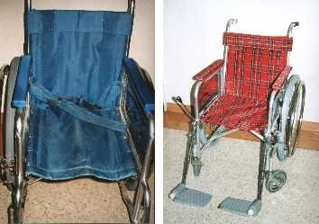

第１６回リハ工学カンファレンス予稿集原稿より
富山県高志リハ病院における
車いす保守管理の取り組み
Maintenance and Repair of
Wheelchairs, the Case of KOSHI Rehab. Hosp.
富山県高志リハビリ病院研究開発部臨床リハ工学サービス科 大島淳一
キーワード：車いす，保守管理，定期点検，改善
１ はじめに
車いすは，福祉機器の代表として語られる場合が多いが，病院など施設所有の車いすでは，その保守管理についてこれまであまり多く議論されて来なかった．多くの場合，破損し使用不可能となるまで継続して使用され，修理にお金をかけるくらいならと廃棄／新調されてきた．また，転倒事故の原因のひとつとしてブレーキのききが悪かったと考えられる場合にも定期点検などの抜本的対策がとられないことが多かった．
当院では，150床の規模に対し，現在140台以上の車いすを所有し，常時110人程度の入院患者が車いすを使用している．そして，使われている車いすの全数を毎月定期的に点検し，さらに退院時には車いすを回収し，整備，点検，消毒して新たな使用者に提供している．そのほか安全性を向上させる改造も行っている．このような取り組みを実施して今年で３年目になり，一応の成果を収めることが出来たのでここに紹介する．
２ 目的
当院のようなリハビリ専門病院では，一般に入院期間が長く，車いすに対する需要も大きい．この入院期間をより快適で安全に使用できる車いすを提供することを目的として活動を開始した．そして，「清潔」「安全」「改善」の３項目をスローガンとして掲げた．
３ 整備点検作業
車いすの保守を行う上で重要なのは，定期的にもれなく車いすを把握することである．それに加え，病院においては日常の車いす使用を妨げないことも大切である．当院においては，２種類の整備点検作業を実施している．
３－１ 定期点検
月一回の病棟回診に合わせ，使用中の全車いすの定期点検を行っている．これは安全を保持する事を第一の目的として，タイヤ空気量とブレーキの点検を行っている．使用者からの希望により小さな手直しも行っている．
このように使用者と直に接するため，機器に関する苦情や要望などの生の声や提案なども収集している．
３－２ 退院時点検
退院などにより使用しなくなった車いすは，全て病棟から回収し，定期点検よりさらに詳しく整備，点検している．またより時間のかかる改修，改造もここで実施している．その内容については次の章で説明する．その後試乗による確認と消毒を行い，次の使用者のために病棟に戻す．
車いす回収は，図１のように大変簡単な方法で行っている．まず病棟は使用済みの車いすに所定の紙を貼り所定の場所に置く．これを回収して整備点検を行い，同じく所定の紙を貼り病棟に返却する．
従来は，修理依頼書など煩雑な事務処理が必要であったがこれを機に車いすに関して一切廃止する事になった．これにより車いすは図の中のループを順調に流れるようになった．この方法は，自動車会社などで行われているカンバン方式を応用した物である．
この方式により，数ヶ月で全ての車いすが退院時点検を受ける事になる．この結果，院内の車いすの全てにID番号をつけ，車種，寸法，購入年度，修理記録などを一元的に管理できるようになった．これらの記録は，将来的な車いすの購入計画にも生かすことができる．
図１ 院内の車いすの動き
４ 整備作業
ここでは当院で実施している，具体的な車いす整備作業内容などについて説明する．
４－１ 清潔
取り組み以前の車いすは，長年の使用により汚れ，傷み，匂っていた．消毒を行っているので，「清潔」ではあったが，一般常識における清潔な外観を呈していなかった．このような車いすに対して，肘掛けを張り替え，新たにシートを作り取り替えた．その際，フレームのさび落とし，歪みの修正，ネジの増し締めなど行った．そのほか，前輪キャスターや後輪タイヤなど必要に応じて交換した．その結果，外見は新品と同様にまで改善され．直進しようとすると左右に曲がる車いすはなくなった．

図２ 取り組み前（左）と取り組み後（右）
４－２ 安全
車いすの安全を向上させるために，ブレーキの利きを保持する必要がある．車いすのブレーキには何種類かあるが，いずれもタイヤを押さえることで制動力を発揮する．このときタイヤの空気が不足していると，満足なブレーキを期待できない．
そこで，先に述べたように月一回定期的に院内で使用中の全ての車いすのタイヤ空気とブレーキの利きを点検し，必要に応じて修理や調整を行っている．この経験から安全のためにブレーキの力を保持するには，タイヤの空気を維持する事が極めて重要であることがわかった．
車いすのタイヤの空気は通常の使用で，約２週間で減少がわかるようになり，１ヶ月でかなり抜け，ブレーキの利きが低下するようだ．そこで院内の各所に空気入れを配置し，適宜空気をいれることにした．また使用者もいつでも空気を補充できるように，院内に空気入れの場所を定めた．（図３）これらの取り組みによって，タイヤの空気が足りない車いすは院内ではほとんど見られなくなった．
図３ 当院の玄関ホールにある空気補給所
警備担当者が常駐しいつでも車いすに空気を補給できる．
４－３ 改善
車いすの機能で最も改善が必要な部分はブレーキであると考えている．車いすのブレーキにはいくつかあるが，種類によっては利きが悪く，部品の摩耗によって信頼性が低下する物もある．そこで，動作が確実で耐久力もあるトグルブレーキに変更している．図４は，三段式ブレーキをトグルブレーキに改造した例である．フレームにアルミ板を取り付け，ブラケットとしている．三段式以外のブレーキはほぼ無改造で取り替えが出来る．また図５の様な改造も行っている．
また，ブレーキが強く利くようにするためにタイヤに強く押しつけるように調整すると操作に大きな力が必要になる．これを解決するためにブレーキのタイヤにあたる部分に電気溶接で凸凹をつけている．太めの溶接棒を使い，低めの電流でなでるだけで耐久性に問題のない凸凹加工が出来る．
図４ ブレーキの変更
図５ ニッシンの車いすにカワムラサイクルのブレーキ

図６ 小さな操作力で大きな制動力を得る工夫
タイヤに接する部分に凸凹がある．右は，部分拡大
このような改造を行うと，タイヤの異常摩耗が予想されたが，実際に行ってみると問題とはならなかった．現在まで当院の車いすのほとんどにこの改良を実施した．
またタイヤと床面のすべりを少なくするために，表面ゴムが劣化したタイヤは接地面を削っている．これらの取り組みによって，ブレーキさえかかっていればびくとも動かない車いすを提供している．
５ おわりに
今回紹介した取り組みも，開始当初は単に車いすをきれいにすることだけ考えていた．しかし病院サービスの質が重視され，また転倒など事故に対する批判の高まり，また財政的な問題などにより，「安全性」や「経済性」が目的のなかに大きく占めるように徐々に変化してきた．しかしこれらは結果として今回の取り組みを後押しする要因になった．
この取り組みを通して，様々な面で道具の保守管理の重要性を当院のスタッフの中に知らせることが出来たと思う．道具が壊れても簡単には買い換えできないが，だからこそ道具を大事に使い，経済性とともに安全性も手にするべきである．
当院にも個人所有の車いすで入院される方がおられる．そしてほとんどの車いすが満足に整備されておらず，かなり危険である．今回の発表によってより多くの人々に，保守点検の重要性を認識して頂き，無駄な税金と無駄な事故が少なくなることを切に希望する．
ここで紹介した車いす保守管理の取り組みは，これからも内容をより充実させて続けていく予定である．そして何をどうすれば，何がどうなるのかを広く知らせて行きたいと考えている．